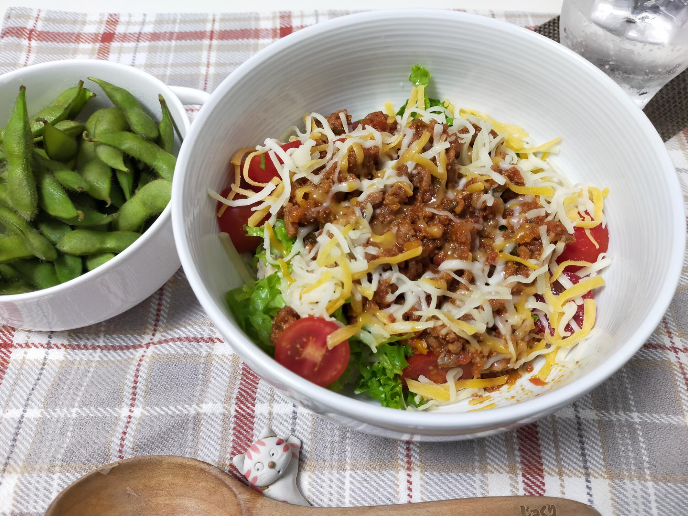

タコライス
材料・金額
| 材料 | 購入金額 | 使用量 | 金額 | kcal |
|---|---|---|---|---|
| ミートソース | - | 300g | 352 | 542 |
| チリパウダー | - | 大1 | - | - |
| さとう | - | 小1 | - | 12 |
| ミニトマト1pac | 246 | 1/2pac | 123 | 25 |
| リーフレタス1pac | 160 | 1/2pac | 80 | 10 |
| ごはん5kg | 1,922 | 180g | 70 | 680 |
| かけるチーズ200g | 322 | 40g | 64 | 144 |
| 合計 | - | - | 689 | 1,413 |
| 1人分（合計×0.5） | - | - | 345 | 706 |
作り方
- ミートソースにチリソースとさとうをいれて小鍋で温める
- レタスをざく切りに、ミニトマトは横半分に切る
- 丼にごはんを盛り、レタス、トマト、1.、チーズをトッピングしてできあがり
振り返り
チリパウダーは大1入れてもそんなに辛くありません。間違えてチリペッパーで作ると、おそらくとても刺激的なものが出来上がります。沖縄は高校の修学旅行で1度、大人になってから旅行で1度訪れました。本場のタコライスは食べた記憶がありません。近くのごはん屋さんのテイクアウトで何度かいただいたタコライスはピリ辛でした。本場のものをいただいたことがないので、実は全く別物かもしれません。家庭料理なので許されると思っています。